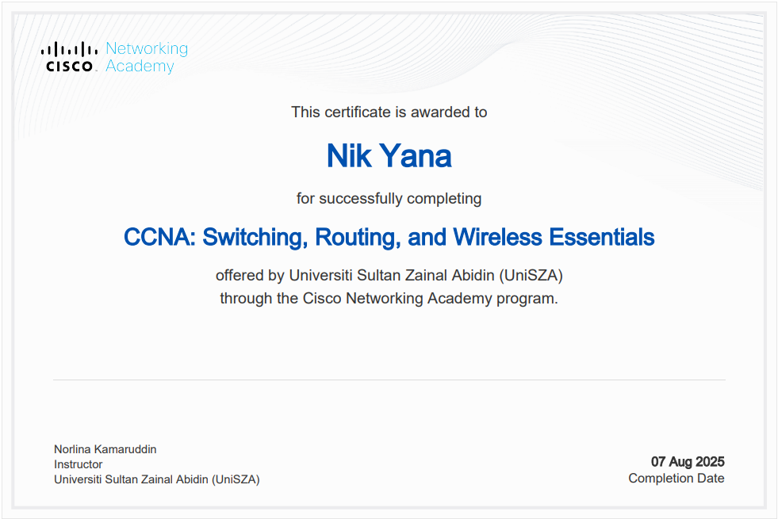
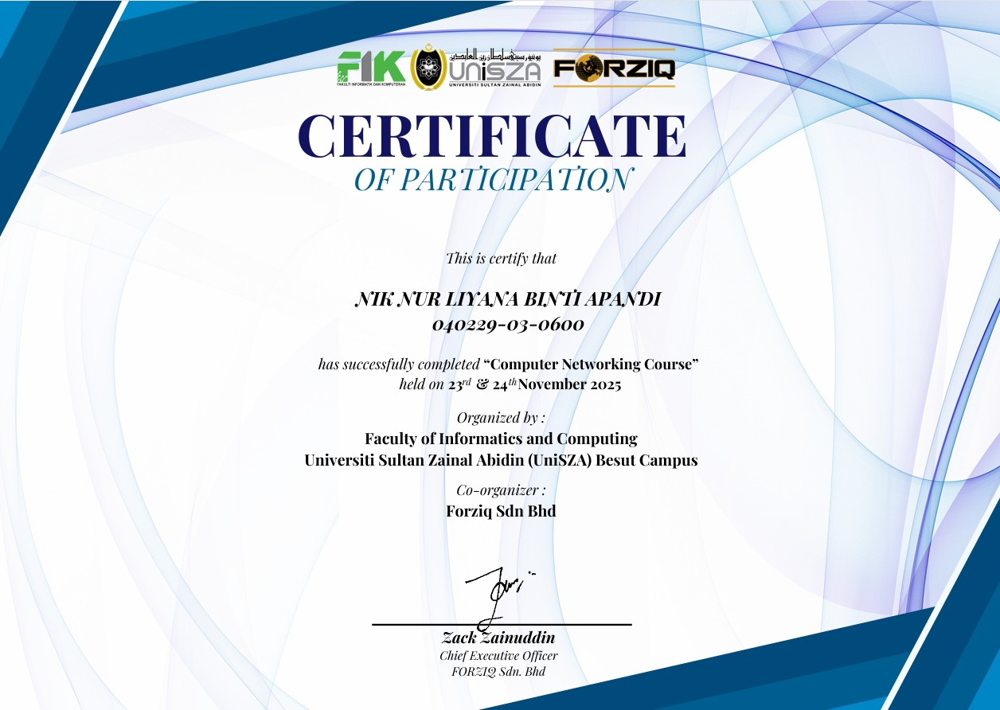
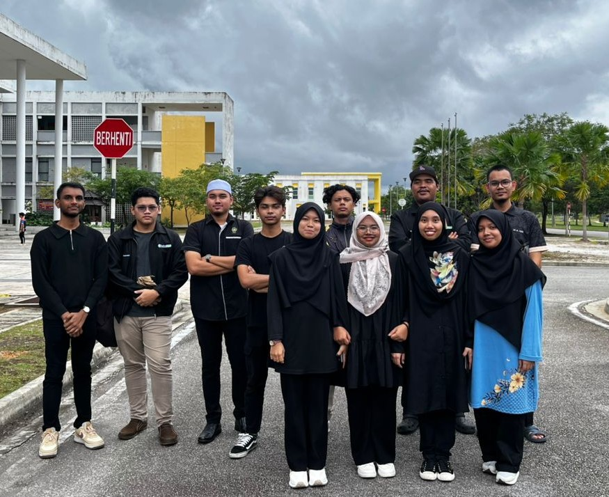
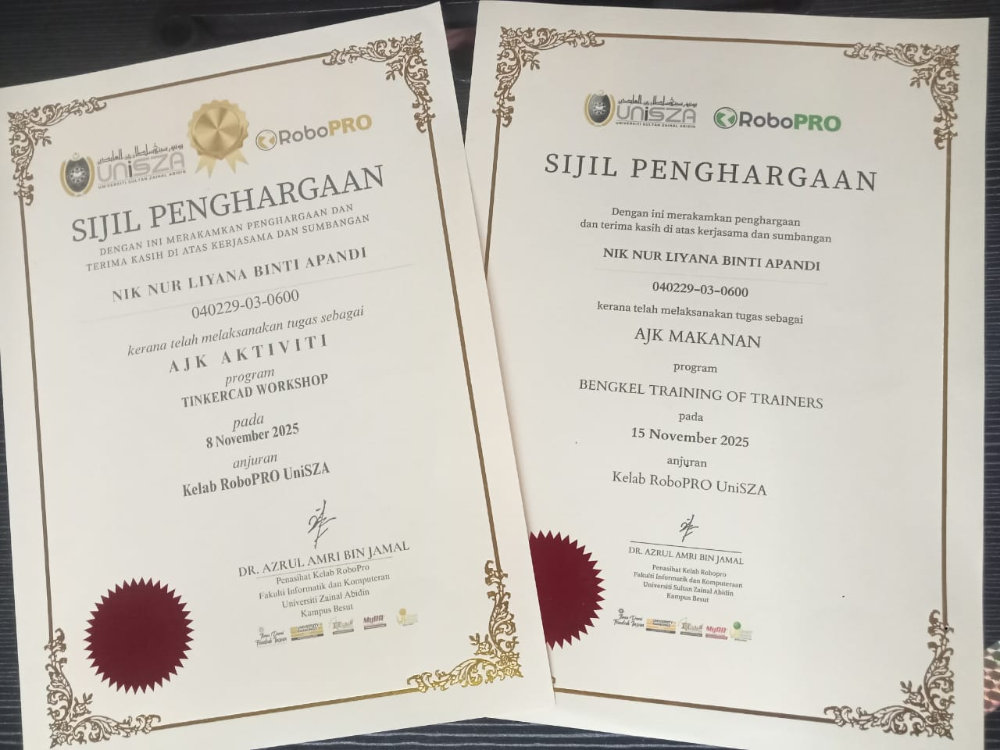
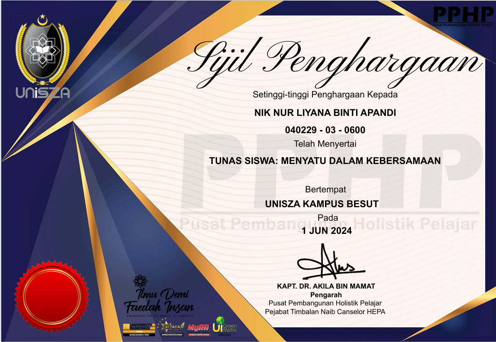

Cisco Certified Network Associate (CCNA)
Cisco Networking Academy
Completed networking and cybersecurity training covering routing, switching, IP addressing and network fundamentals.


Smart Network Bootcamp
Forziq Sdn. Bhd.
Participated in a network bootcamp focusing on networking fundamentals and network simulation concepts.



RoboPro Club Member
Universiti Sultan Zainal Abidin (UniSZA)
Assisted in conducting IoT and embedded systems workshops for secondary school students and promoted STEM awareness.

Tunas Program
Community Outreach Program with SMK Tembila
Participated in a co-curricular community program involving external school students and community engagement activities.